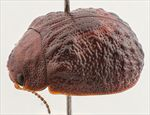
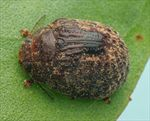
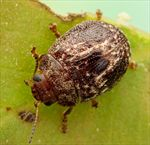
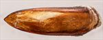
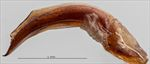
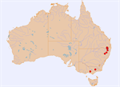

Click on images to enlarge
{kind=link}

Female, Dalveen, S.E. Queensland
{kind=link}

Female, Bookookoorara, N.E. New South Wales
{kind=link}

Male, Armidale, N.E. New South Wales
![Aedeagus, dorsal view (Boonoo Boonoo, N.E. New South Wales]](assets/image/Ta17/Ta17_Ad00-259a_SM.jpg){kind=link}

Aedeagus, dorsal view (Boonoo Boonoo, N.E. New South Wales]
![Aedeagus, lateral view (Boonoo Boonoo, N.E. New South Wales]](assets/image/Ta17/Ta17_Ad00-259b_SM.jpg){kind=link}

Aedeagus, lateral view (Boonoo Boonoo, N.E. New South Wales]
{kind=link}

Distribution
Name
Trachymela sp. Ta17
Reference specimen
2000-259, Boonoo Boonoo, NE New South Wales.
Adult Description
Length: ♂ 5.3–6.2 mm (n=5), ♀ 5.4–7.1 mm (n=22).
Colouration:
- Head: uniformly orange-brown to red-brown with black-tipped mandibles; antennomeres 1–4 light or straw-brown, 5–8 grading from that shade to dark-brown, 9–11 dark-brown or (rarely) black.
- Pronotum: brown, concolorous with head.
- Scutellum: concolorous with or fractionally darker than pronotum; if concolorous, may be edged in fractionally darker brown.
- Elytra: brown, concolorous with or fractionally darker than pronotum, a slightly or considerably darker (rarely black) and approximately rectangular area straddles the elytral summit, slightly darker patches may be present on disc, verrucae usually concolorous with, rarely slightly darker than, surrounding area, humeral callus concolorous with surrounds.
- Venter & Legs: variable, gula of head black, prothoracic ventrite often black, lateral areas of thorax and abdomen light- to mid-brown, central areas are darker brown, inside surface of elytral epipleura brown or black.
- Cuticular Wax: light brown of uniform shade, distributed unevenly over surface, the quadrate area around elytral summit is wax-free and usually bordered by the highest concentration of wax.
Morphology:
- Head: punctures relatively large (pd ≈ 2–2.5×ef) and somewhat unevenly and moderately densely distributed, interstices sometimes conspicuously elevated. Antennae relatively long (AL/BL: ♂ 45–49%, ♀ 40–43%), distal segment very slightly expanded and a little flattened.
- Pronotum: disc evenly curved transversely with a broad but very shallow depression situated behind the outside edge of each eye, discal surface usually slightly rugose, rarely smooth, puncturation clearly impressed, quite evenly distributed and moderately dense in discal area, becoming considerably coarser at lateral margins. Front margins join the slightly thinner lateral margin in a smoothly rounded right-angle, lateral margin continues very briefly in a straight line then curves smoothly and gradually towards rear margin.
- Scutellum: usually smooth and nitid, unpunctured.
- Elytra: surface evenly curved transversely with a shallow depression near middle of disc anterior to mid-line, elytral surface has a rough texture with the large punctures often lost among the raised interstices that near the scutellum form two or three longitudinal ridges, isolated verrucae with one or more small punctures are mostly confined to posterior third of disc and may be pustular or slightly extended longitudinally, transverse wrinkles of raised interstices are sometimes present just behind elytral depression, a raised, quadrate and relatively smooth and flat surface is present around elytral summit and is usually traversed by rows of punctures, elytral suture not carinate, surface slightly discontinuous under humeral callus. Vertical extension of epipleura moderate (HCE/PW = 0.32–0.37).
- Venter: prosternal process narrow anteriorly, broadening towards posterior, lightly closed anteriorly, short setae present at rear of prosternal process, absent from mesoventrite, 1–3 setae present on anterior and median trochanters, 1 on posterior trochanters; front edge of metaventrite beveled, truncate; inner edge of posterior of epipleura lacking setae.
Male Genitalia (Aedeagus):
- Dimensions: moderately long (LPE/BL = 34–37%), lanceolate.
- Dorsal view: shaft almost parallel-sided for most of central section, then sides converging gradually from about 40% of length from apex, dorsal surface smoothly curved with very faint dorso-median channel usually present, dorsolateral channels short, tip protruding slightly.
- Lateral view: shaft almost evenly curved over most of length, thinning towards apex over final 20%, tip deflexed, flagellum thin and almost invariably broken off.
Immature Stages
- Unknown.
Similar species
- Ta56: shares with Ta17 the black gula on the head and the quadrate, raised area straddling the summit of elytral suture, as well as the rough texture of the elytra. However, Ta56 is larger, and has a much longer aedeagus.
- Ta11: similar in possession of a quadrate, wax-free, black area straddling elytral summit, but differs in its smaller size, the lack of a black gula and in having a very differently shaped aedeagus.
- Ta05: superficially similar, though larger and lacks the quadrate flat area around elytral summit.
Notes
- Taxonomy: Ta17 has many similarities to Ta56, and they are likely closely related.
- Distribution & Abundance: This species is not often collected. It occurs in highland areas from far southern Queensland to Victoria.
- Host Associations: Feeds on monocalypts, with 77% of host records from stringybark (Eucalyptus : Capillulus) and the rest from Eucalyptus andrewsii, E. obliqua and unspecified peppermints (probably E. radiata).
- Morphological Variation: Ta17 is relatively easy to identify by the large, wax-free quadrate area around the elytral summit. The inner surfaces of the epipleura are black in specimens from the New England Tablelands but are brown in specimens from Victoria. A specimen from northern New South Wales [2018-085] has the quadrate area around the elytral summit very sharply defined by a broad verruca-free border; it also differs from typical Ta17 by the different texture of the rest of the elytral surface. A female specimen from Stanthorpe [COL-01445], is very likely different; though similar in size to Ta17 and with the texture of the dorsal surface very similar to that species, its verrucae are smaller, it lacks the quadrate flat area at the elytral summit, and its elytral epipleura are completely brown, which is unusual for a specimen of Ta17 from this locality.
- Population Structure: The sex ratio is strongly female-biased, with 22 of 27 specimens examined (81.5%) being female (p < 0.01 using an exact binomial test).
Copyright © 2026. All rights reserved.